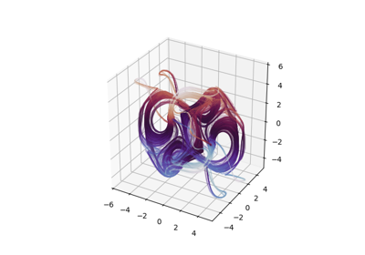
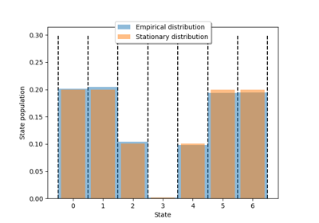
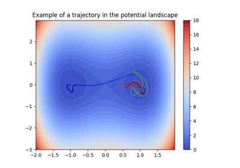
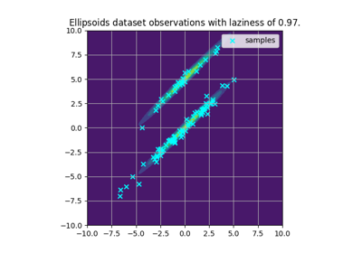
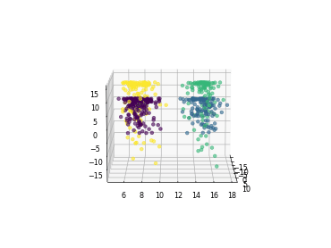

Datasets¶
Examples contained in the deeptime.data module.
ODEs¶
Arnold-Beltrami-Childress flow
Arnold-Beltrami-Childress flow

Custom ODEs
Lorenz system

Thomas attractor
SDEs¶


Birth-death chain model


Double-well 2D
Double-well discrete


Quadruple-well


Other¶


Ellipsoids dataset



Swissroll model